Indhold
I T05 blev vi introduceret til grundlæggende indholdsproduktion. Vi lærte om konceptet “shooting for the edit” - som jeg heldigvis havde erfaring med på forhånd. Jeg fik lavet mit master-interview samt B-rolls. Lejede en fed gimbal. Vi blev introduceret til After Effects og Loffiefiles, som for mig var det mest udfordrende i forløbet. I virksomhedssite benyttede vi scrum og trello til projektstyring. Vi lærte om Git til samarbejde mellem sites. Til slut rundede vi af med Pecha Kucha præsentationer, der var en sjov øvelse.
Buzzwords:
Teamsamarbejde, Trello, tests, PremierePro, B-rolls, colorgrading, After Effects, Lottiefiles, Git, Scrum, Pecha Kucha & evaluering.
Passionsvideo
I min passionsvideo arbejdede jeg alene. Jeg valgte at filme Jacob, som har en passion for surdej. Efter en vellykket skydedag så jeg en masse LinkedIn learning og kastede mig derefter over Premiere Pro.
PassionssiteVirksomhedssite
Vi fik en aftale i hus med Zeymer.dk. En fin lille krystalbutik i Roskilde. Vi startede med at lave en kompelt analyse af det eksisterende site ved brug af: sitemap, wireframes, styletile, og indholdsoversigt.


Tests
Vi benyttede os af fem-sekunderstest til analyse af eksisterende site, samt det fornyede site. Testen viste klare problemer med navigation, hvilket vi fik forbedret markant.Derudover lavede vi også likerttest, hvor vi benyttede os af, at Zeymer.dk har et Facebook community vi kunne adspørge om deres købevaner samt deres tilknytning til butikken.

Syletile & prototype
På baggrund af moodboards fik vi udviklet et samlet styletile. Det bedstod af farver, der alle var hentet i natursten og 3 forskellige fonter. Derudover blev vi enige om at vi skulle have håndskrevne sætninger og tegninger på sitet for at understrege den varme stemning. Derefter hoppede vi videre til wireframes og prototype (som vi også lavede tests af).
Zeymer.dk

Video
Til Zeymers nye hjemmeside besluttede vi os for at lave en fed herovideo, for at skabe en god og inspirerende stemning. Videon er udelukkende bygget op af montage/b-rolls og kører i et langsomt meditatiovt tempo. Jeg benyttede mig af TechLab og låne en fed Ronin grimbal for at stabilisere kamera. Til slut klippede jeg videoen sammen, med de PremierePro færdigheder jeg havde lært fra passionsvideo og LinkedIn Learning. Grundet tidspres for aflevering nåede jeg ikke at colorgrade videoen.
Fotomateriale
Vi aftalte en skydedag med Helle Zeymer, nede i butikken. Butikken lå i en kælder og jeg havde derfor forberedt nogle forskellige backdrops, klæder og stylingelemnter vi kunne bruge, for at skabe det æstetiske univers fra vores moodboard. Jeg skød det hele på stativ og med bagvendt flash, for et blødere udtryk. Derefter retoucherede jeg al materialet i CameraRaw (photoshop), hvor jeg gjorde farverne lidt varmere og dusty, lagde lidt grains på og trak clairity og kontrast ned for et mere "alfe"-agtigt udtryk.
 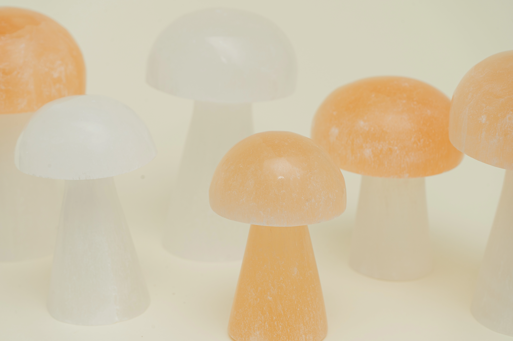
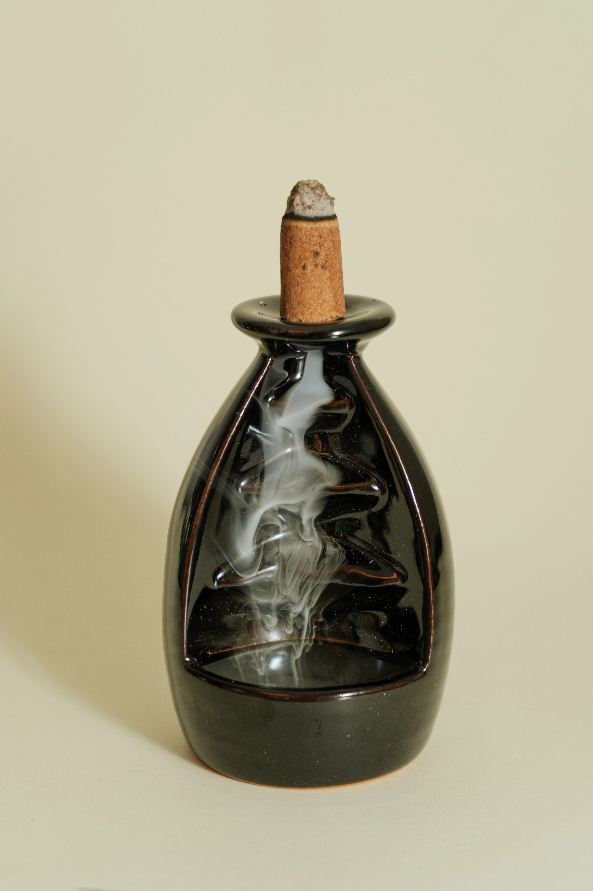
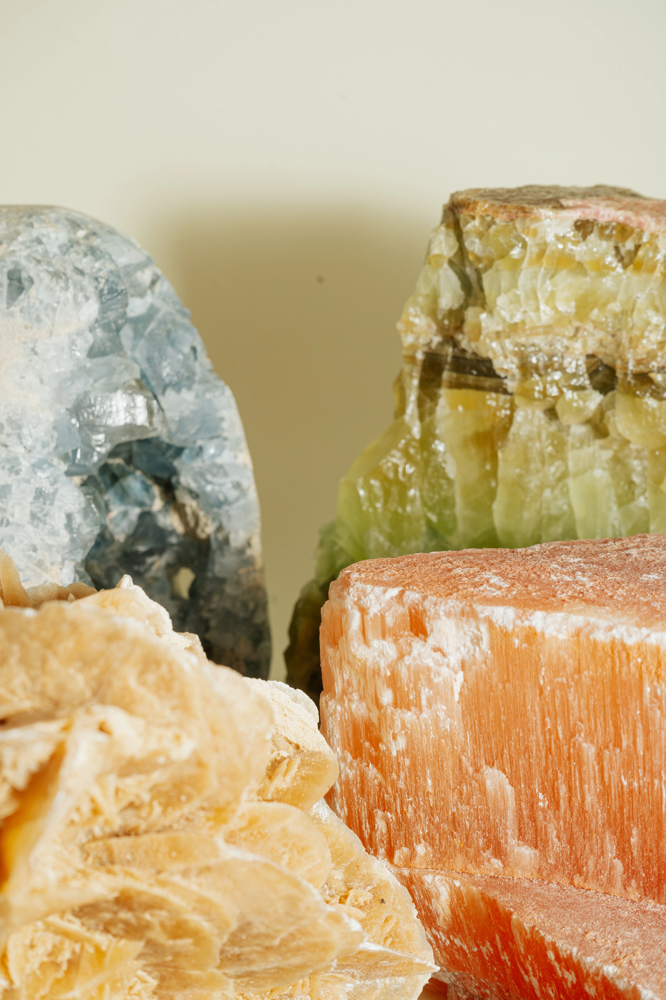
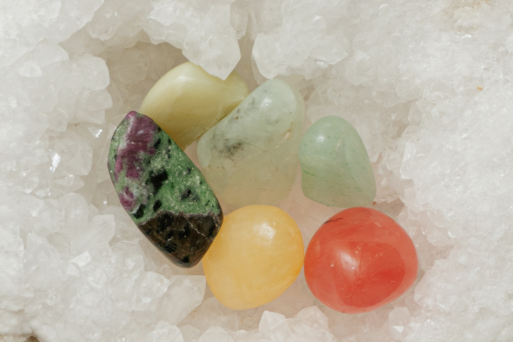
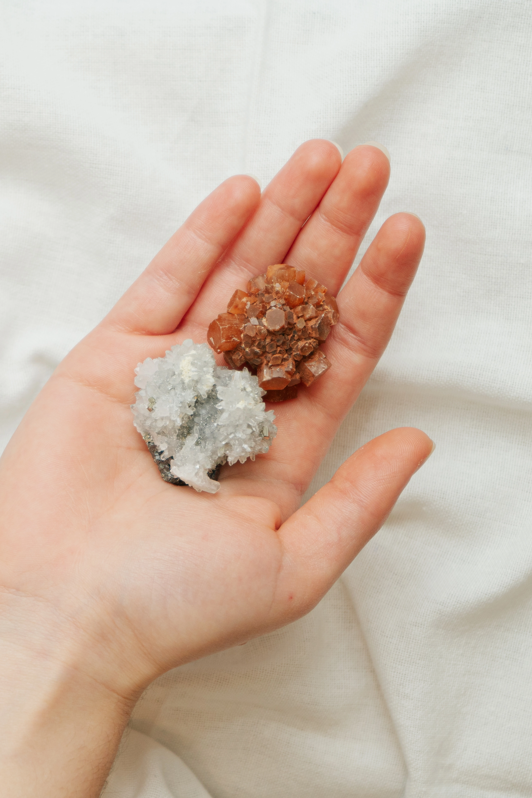
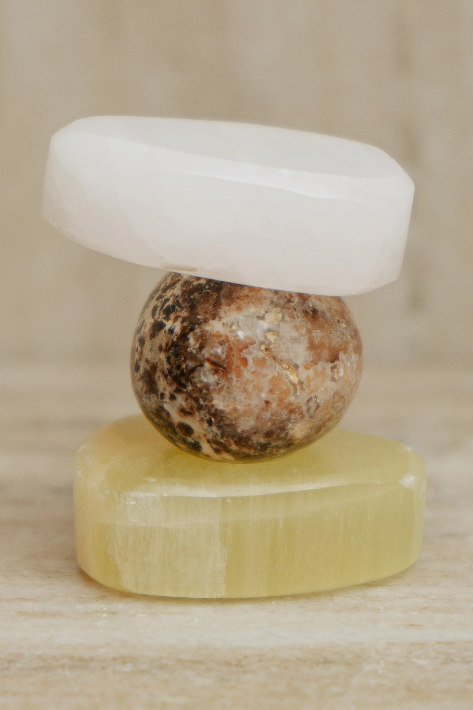
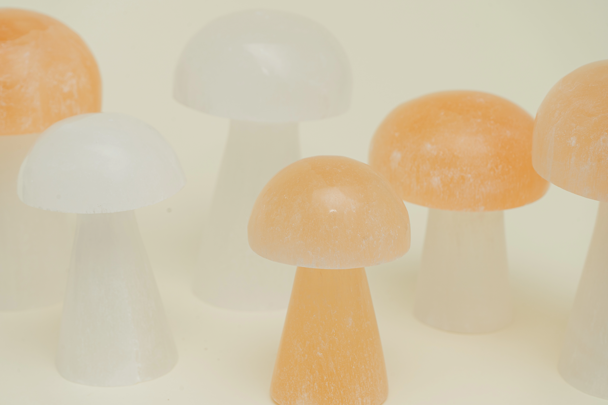
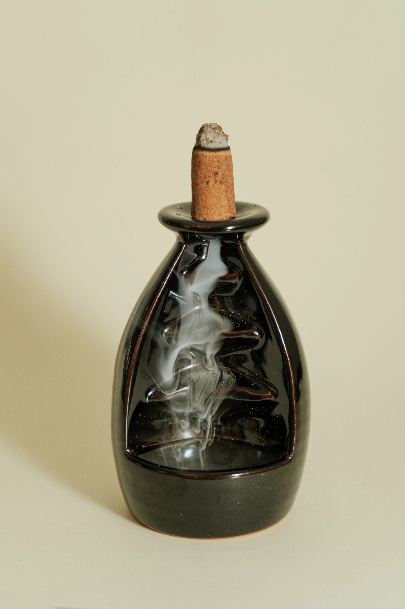
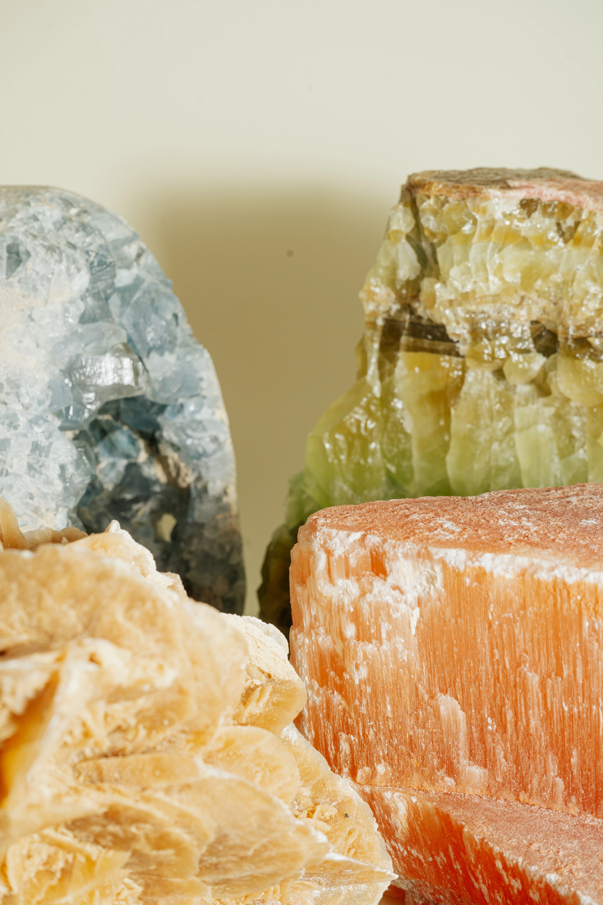
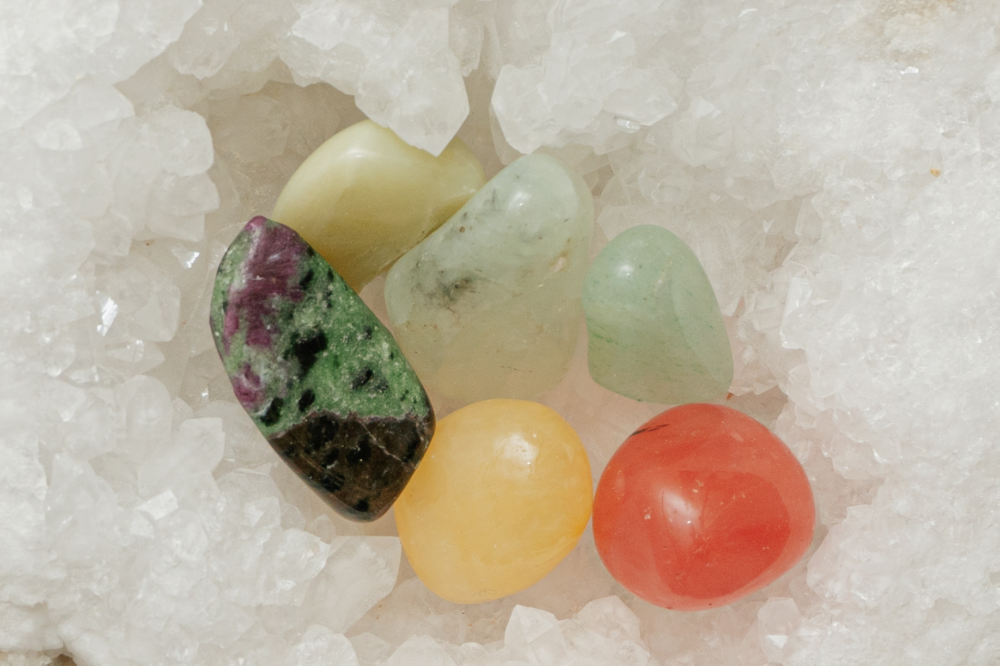
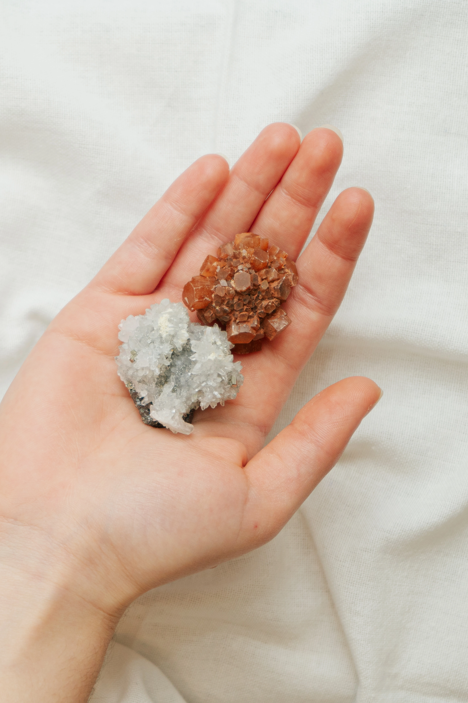
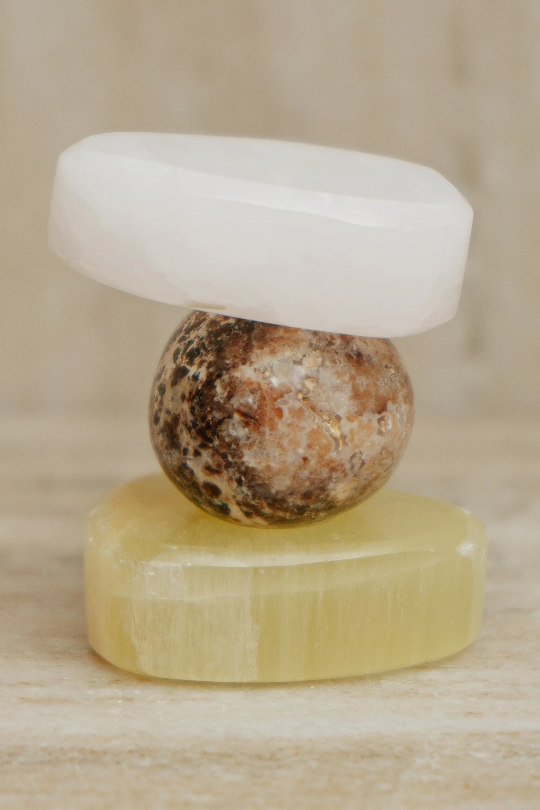
Evaluering
Mest dybdegående projekt hidtil. Fedt med passionsvideo, blev markant forbedret i PremierePro. Lærte meget om lottiefiles og After Effects. Spændende med gruppearbejde hvor jeg lærte utroligt meget om samarbejde, afstemning og forskellige ambitioner.
Antal stjerner: